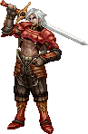 |
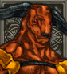 牛头人 |
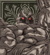 石巨人 |
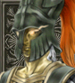 泰坦 |
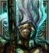 亡灵骑士 |
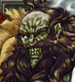 邪眼王 |
||
| 牛头人--石巨人--泰坦，很多人都认为转泰坦后能有移动7，可是移动依然是5，不过，高攻高防很不错，只是有点不爽（为什么电脑的是7，我的才5）；石巨人高防高攻，回避低是最大的问题，所以基本没人一直练下去，都是转泰坦了！
牛头人--亡灵骑士--邪眼王（基本上不推荐亡灵转职），邪眼王实在是很烂，特技太短，直线3，移动也才5，在后期，几乎每个职业和魔兽都有范围特技 魔法或长距离特技的（就是阿郎佐都有直线4的特技的）；而亡灵骑士就不错了，无情刃打80%的怪都是一次砍掉，实在砍不动就用绝情刃！ |
|||
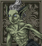 小恶魔 |
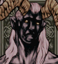 恶魔 |
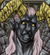 大恶魔 |
|
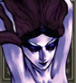 莉莉丝 |
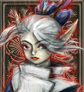 吸血鬼 |
||
| 小恶魔--恶魔--大恶魔，主要以火系魔法攻击，威力也很不错，范围有点小（相对于冰系魔法来说的）！ 小恶魔--莉莉丝--吸血鬼，和上一条正相反，以冰系魔法攻击，威力略比火系小一点，范围大是个不小的优势！虽然防低血少，不过还是做为主力推荐！ |
|||
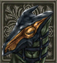 幼龙 |
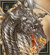 龙 |
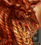 巴哈姆特 |
|
| 幼龙--龙--巴哈姆特，还没见过不这样转的人，龙和巴哈姆特都有范围特技，注意使用后补血，练起来还是很快的！ | |||
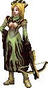 |
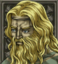 半人马 |
||
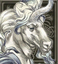 独角兽 |
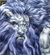 芬莉儿 |
||
| 半人马--蝎狮--梦魇，蝎狮的特技很有用，攻击力也很不错，距离远，梦魇更是恐怖，如此变态的天生技能真爽，没有特技是唯一的缺陷吧！这条做主力推荐！ 半人马--独角兽--芬莉儿，前期主要的中距离攻击主力（2格攻击很好用），转独角兽后练级很快，天生技能也很好，芬莉儿的特级是不打友方单位的，用起来不用担心打死自己人！ |
|||
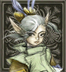 小妖精 |
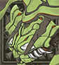 希尔芙 |
||
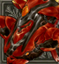 伊弗里特 |
|||
| 小妖精--精灵--希尔夫，恢复为主的路线，有着强力的恢复能力，做为后盾是非常可靠的！ 小妖精--风灵--伊弗里特，攻击为主的路线，对玩家要求不低，队伍中只有女主角会解除状态的技能，风灵会电系魔法，伊弗里特会火系魔法，不过大多数还是用恢复技能来练级，攻击型法师确实不少了！做为主力推荐路线，G.Healthing基本上足够治疗队伍了，而M.Healthing实在是太浪费了！ |
|||
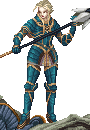 |
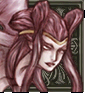 鸟身女魔 |
||
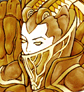 炽天使 |
|||
| 鸟身女魔--飞马，鸟身女魔的移动很攻击都很不错，回避也行，转为飞马后有龙卷风的特技，也很好用，飞马也可以用来引怪，魔防和物防都很不错！ 天使--炽天使，电系魔法魔兽，可是魔攻却不算高，甚至是最低的一个，只靠电的高攻击来弥补，转为炽天使后的审判之雷还算不错！ |
|||